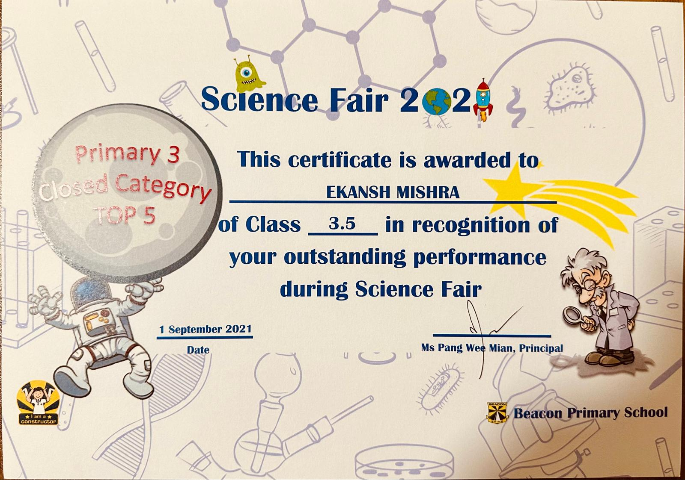
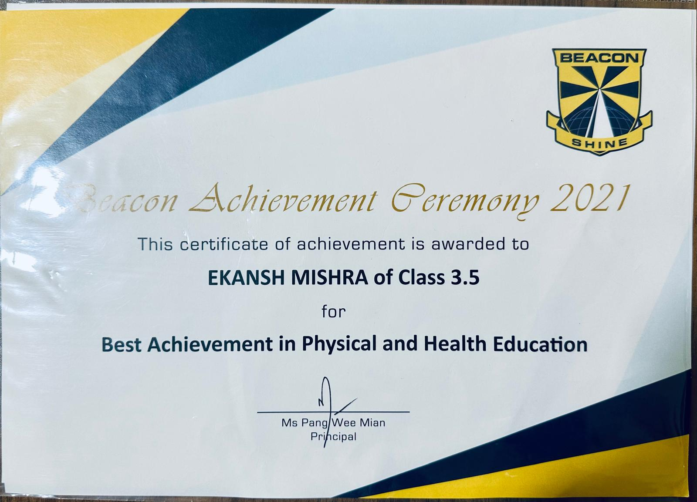

My Skills
-
Programming Languages I Know
- Scratch Block-Based
- Microbit Block-Based
- LEGO EV3 Block-Based
- LEGO Spike Block-Based
- HTML
- CSS
- JS
- Python
- Swift (learning)
I know how to make videos using iMovie and CapCut and animations using Keynote
-
My Video Projects (Animations and live videos)
- APMOPS: 2023 (Participation), 2024 (Participation)
-
Story Telling in Beacon Primary School: Second in class (2022), First in class (2021, 2023), Second in level (2021, 2023)
-
Excellence in ICT Scholarship (EICTS) for years (2022, 2023, and 2024)
-
Science Fair in Beacon Primary School 2021 Achievements: Closed Category: Top 5 (3rd), Open Category: Participation

- 
-
Beacon Achievement Ceremony (BAC): EICTS (mentioned above), Best Achievement in Class (2020), Best Achievement in Physical and Health Education (2023)

- 
- IDE Robotics competition (2024): Represented Beacon Primary School
- Best Design for the Adopt-A-Float Programme by GoBGC for the School of Science and Technology's adopted float
-
Story Telling in the Sky Team Excellence awardby IMDA in partnership with 65 Drones